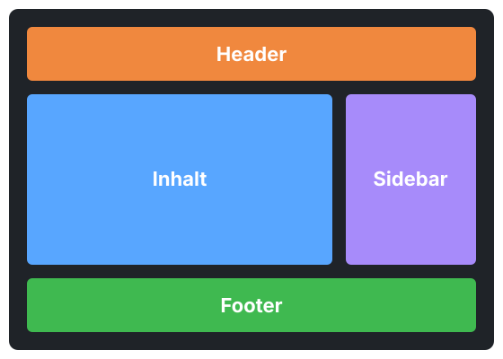
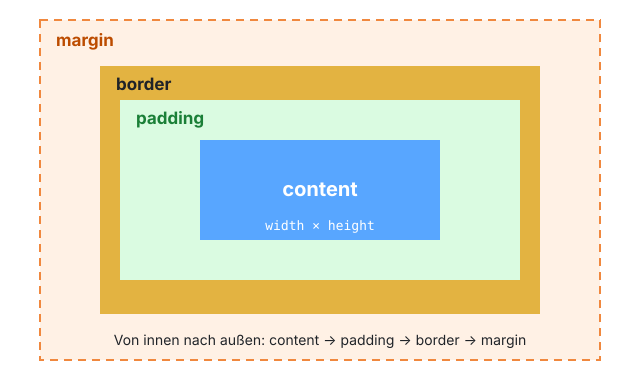
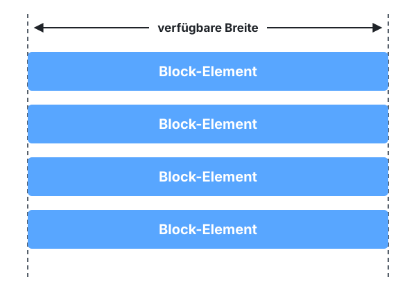
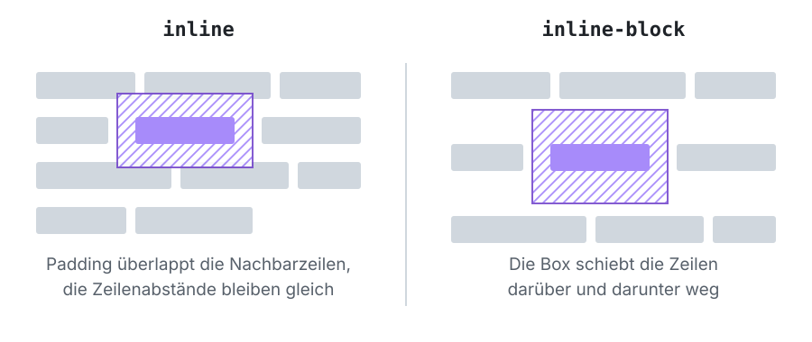
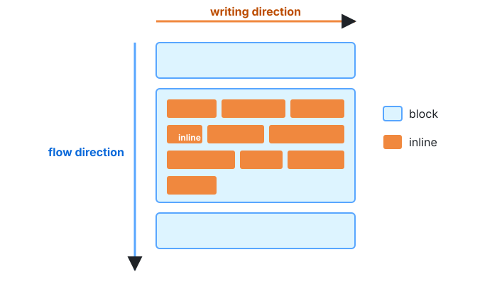
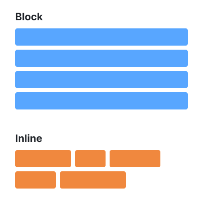
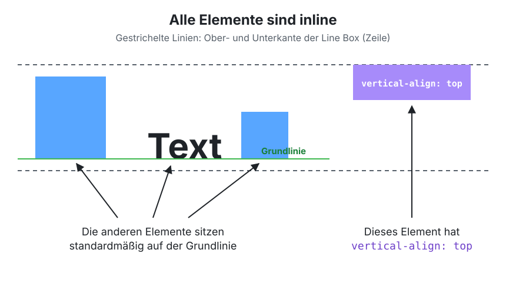

Lektion 2.2 — Teil 2: CSS & Layout
Box Model & Display
Lernziele
- Das Box Model mit Content, Padding, Border und Margin erklären
- Die Kurzschreibweisen für
paddingundmarginanwenden - Den Unterschied zwischen
box-sizing: content-boxundborder-boxkennen display: block,inlineundinline-blockunterscheiden und gezielt einsetzen- Die Line Box,
vertical-alignund die „4px-Lücke“ zwischen Inline-Elementen verstehen
1 — CSS BASICS: Box Layout Context
In Lektion 1.3 haben wir gesehen: HTML erzeugt Boxen. CSS (Cascading Style Sheets) bestimmt, wie groß diese Boxen sind, wie sie aussehen und wie sie angeordnet werden. Eine Webseite ist aus CSS-Sicht nichts anderes als eine Anordnung von Rechtecken:

2 — Box Model
Jede Box besteht von innen nach außen aus vier Schichten:

| Schicht | Bedeutung |
|---|---|
| Content | Der eigentliche Inhalt (Text, Bild). Größe über width/height. |
| Padding | Innenabstand zwischen Inhalt und Rahmen. Hat die Hintergrundfarbe des Elements. |
| Border | Rahmen um Padding und Inhalt. |
| Margin | Außenabstand zu anderen Elementen. Immer transparent. |
header {
/* BOX-SIZING */
box-sizing: content-box;
box-sizing: border-box;
/* CONTENT */
width: 200px;
height: 100px;
/* PADDING */
padding-top: 10px;
padding-left: 10px;
padding-bottom: 10px;
padding-right: 10px;
padding: 10px 20px; /* top/bottom, left/right */
padding: 10px; /* all sides */
/* BORDER */
border: 1px solid black; /* all sides */
/* MARGIN */
margin: 10px; /* all sides */
}Die wichtigsten Box-Model-Properties im Überblick
box-sizing: content-box | border-box;
width: 50% | 100px;
height: 75% | 100px;
padding: 10px; /* alle Seiten 10px */
padding: 10px 5px; /* oben/unten 10px, links/rechts 5px */
padding-left/right/top/bottom: 10px; /* nur eine Seite 10px */
border: 1px solid black;
margin: 10px; /* alle Seiten 10px */
margin: 10px 5px; /* oben/unten 10px, links/rechts 5px */
margin-left/right/top/bottom: 10px; /* nur eine Seite 10px */Prozentangaben bei width beziehen sich auf die Breite des Eltern-Elements (siehe Einheiten in Lektion 2.1).
box-sizing: content-box vs. border-box
Ist der Default-Wert. width legt die Breite des
Contents fest. Padding und Border kommen noch dazu.
Gesamtbreite = width + padding + border
Oft ist dieser Wert vorteilhaft. width ist die Breite
von Content + Padding + Border zusammen.
Content-Breite = width − (padding + border)
Beispiel mit width: 200px; padding: 20px; border: 5px solid;:
Viele Projekte setzen gleich am Anfang des Stylesheets
*, *::before, *::after { box-sizing: border-box; }. Dann entspricht
width immer der tatsächlich sichtbaren Breite.
3 — Block-Element
header {
/* DISPLAY */
display: block;
}
Ein Block-Element beginnt immer in einer neuen Zeile und nimmt die gesamte verfügbare Breite des Eltern-Elements ein – egal, wie viel Inhalt es hat.
4 — Inline-Element und Inline-Block-Element

Inline
header {
/* DISPLAY */
display: inline;
/* CONTENT */
width: 100px; /* ✗ wird ignoriert */
height: 50px; /* ✗ wird ignoriert */
/* MARGIN TOP/BOTTOM */
margin-top: 10px; /* ✗ wird ignoriert */
margin-bottom: 10px; /* ✗ wird ignoriert */
}
Ein Inline-Element fließt wie Text in der Zeile mit. width,
height sowie margin-top/margin-bottom haben
keine Wirkung. Vertikales Padding wird zwar gezeichnet, schiebt die
umliegenden Zeilen aber nicht weg – es überlappt sie (schraffierte Fläche links).
Inline-Block
header {
/* DISPLAY */
display: inline-block;
/* CONTENT */
width: 100px; /* ✓ wirkt */
height: 50px; /* ✓ wirkt */
/* MARGIN TOP/BOTTOM */
margin-top: 10px; /* ✓ wirkt */
margin-bottom: 10px; /* ✓ wirkt */
}
inline-block kombiniert beides: Das Element steht in der Zeile
wie ein Inline-Element, respektiert aber Breite, Höhe und alle Abstände
wie ein Block-Element.
Text mit inline Element, das width/height ignoriert.
Text mit inline-block Element, das width/height respektiert.
5 — Block-Element vs. Inline-Element

Wann verwendet man was?
Inline
- Textauszeichnungen wie
<span> - Hervorhebungen innerhalb eines Textes
- Links innerhalb eines Fließtextes (
<a>)
Inline-Block
- Kleine Buttons nebeneinander
- Navigationsmenüs
- Kleine Boxen oder Badges
- Elemente, die nebeneinanderstehen, aber definierte Abmessungen haben sollen
Verhalten im Vergleich
| Behaviour | Inline | Inline-Block | Block |
|---|---|---|---|
| Respects left/right padding | YES | YES | YES |
| Respects top/bottom padding | YES* | YES | YES |
| Respects left/right margin | YES | YES | YES |
| Respects top/bottom margin | NO | YES | YES |
| Respects width/height | NO | YES | YES |
| Default width expands to parent element (not width of its contents) | NO | NO | YES |
| Forces a line break | NO | NO | YES |
* Wird gezeichnet, verdrängt aber die Nachbarzeilen nicht (siehe Abbildung oben).

Block
- Beginnt immer in einer neuen Zeile.
- Der Parent bestimmt die Breite (nimmt die ganze verfügbare Breite ein).
<main>,<nav>,<header>,<footer>,<aside>,<article>,<section>,<div>,<p>,<h1>…<h6>
Inline
- Beginnt nicht in einer neuen Zeile, sondern wird in eine bestehende Zeile eingebettet.
- Der Inhalt bestimmt die Breite (nimmt nur so viel wie nötig).
<a>,<img>,<span>,<label>
6 — The Line Box
Alle Inline-Elemente einer Zeile sitzen gemeinsam in einer gedachten
Line Box. Standardmäßig werden sie an der Grundlinie
(baseline) des Textes ausgerichtet. Mit vertical-align lässt sich das ändern:

img {
/* VERTICAL ALIGN */
vertical-align: top;
vertical-align: middle;
vertical-align: bottom;
}The Line Box and 4px gap?
Stehen mehrere Inline- oder Inline-Block-Elemente nebeneinander, entsteht zwischen ihnen eine kleine Lücke von ca. 4px. Der Grund: Der Zeilenumbruch bzw. die Leerzeichen im HTML-Quelltext werden als Leerzeichen dargestellt – genau wie zwischen zwei Wörtern.
<nav>
<a></a>[Whitespace]
<a></a>[Whitespace]
<a></a>[Whitespace]
</nav>Statt Whitespace im HTML zu entfernen, verwendet man für Elemente nebeneinander heute
Flexbox (Lektion 2.5) – dort gibt es diese Lücke nicht, und Abstände
werden mit gap gesteuert. Bei Bildern hilft vertical-align: bottom
gegen die kleine Lücke unter dem Bild.
Projektschritt
Reset, Box Model & Display
Jetzt bekommen die Bereiche der Seite Abstände, Rahmen und eine maximale Breite, und die Navigation steht nebeneinander. Hänge den Abschnitt an style.css an.
/* ---- 2.2 Box Model & Display ------------------------------ */
/* Reset: width = sichtbare Breite, keine Browser-Abstände */
* {
box-sizing: border-box;
margin: 0;
padding: 0;
}
body {
line-height: 1.6;
background-color: whitesmoke;
}
header {
padding: 1rem;
}
/* Navigationspunkte nebeneinander */
#nav-menu ul {
list-style: none;
}
#nav-menu li {
display: inline-block;
margin: 1rem 1rem 0 0;
}
/* Inhalt zentriert mit maximaler Breite */
main {
max-width: 1200px;
margin: 2rem auto;
padding: 0 2rem;
}
h1 {
margin-bottom: 2rem;
padding: 1.5rem;
border-radius: 10px;
}
h2 {
margin-bottom: 1rem;
padding-bottom: 0.5rem;
border-bottom: 3px solid;
}
section,
aside {
margin: 2rem 0;
padding: 2rem;
border: 1px solid #ccc;
border-radius: 10px;
}
p,
ul,
ol,
table {
margin-bottom: 1rem;
}
ul,
ol {
padding-left: 2rem;
}
img {
max-width: 100%;
height: auto;
vertical-align: bottom;
}
footer {
padding: 2rem;
margin-top: 3rem;
}
/* Tabelle: volle Breite, Innenabstand in den Zellen */
table {
width: 100%;
}
th,
td {
padding: 0.8rem;
}📁 Stand nach dieser Lektion: beispiele/2.2/
Häufige Fehler
Ein Element mit width: 100%; padding: 20px; ist breiter als sein Eltern-Element und erzeugt einen horizontalen Scrollbalken.
box-sizing: border-box; setzen – dann sind Padding und Border in den 100 % enthalten.
<a> oder <span> reagieren nicht auf width, height oder margin-top.
Das Element mit display: inline-block (oder block) umstellen.
Aufgaben
Ein Element hat width: 300px; padding: 10px 20px; border: 2px solid; margin: 15px;. Wie breit ist es sichtbar (inkl. Border) mit content-box? Wie breit mit border-box? Wie viel horizontalen Platz nimmt es inkl. Margin ein?
Erstelle drei <span>-Elemente mit width: 120px; height: 60px; margin: 20px; und einer Hintergrundfarbe. Stelle sie nacheinander auf inline, inline-block und block und beschreibe die Unterschiede.
Wähle auf der Demoseite eine <section> aus und lies im Tab Computed Content-Breite, Padding, Border und Margin ab. Ändere max-width von <main> auf 960px – was passiert?
Stelle die Karten (.card) der Demoseite auf display: inline-block; width: 250px;, damit sie nebeneinander stehen. Miss die Lücke zwischen ihnen in den Entwicklertools. Finde zwei Wege, sie zu entfernen.